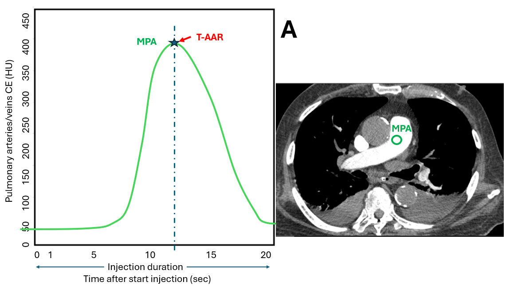
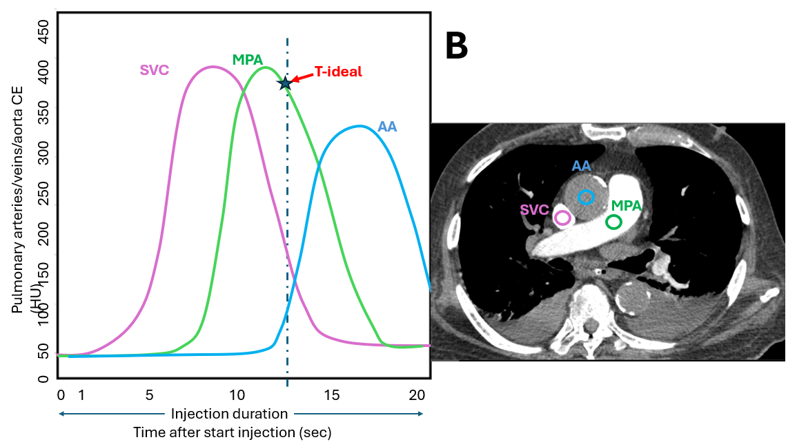

Precision Timing System for CT Pulmonary Angiography (Hardware Latency Compensated)
⚠️ Clinical Disclaimer: This online calculator is designed as a decision-support and educational tool for qualified radiographers and radiologists. While based on peer-reviewed published equations and spatial-temporal timing models, final verification of scan parameters, injection rates, and patient safety remains the sole responsibility of the operating clinical staff.
Bae's Standard Formula (Hardware Compensated):
TPEAK = TID + TARR - 5.3 | TDELAY = TPEAK - ½ TSD - TSYS
Protocol: 20 mL Test (+ 20 mL Saline @ 4.5 mL/s) + 30 mL Diagnostic (+ 35 mL Saline @ 4.5 mL/s)
Source: Read from single-ROI MPA curve. Second when HU begins to sharply rise.
Standardized Protocol: Programmed flow rate set on power injector (Default: 4.5 mL/s).
Protocol Volume: Default 30 mL (Editable for site-specific protocol adaptation).
Source: Pure X-ray acquisition time read from CT diagnostic protocol card.
Pre-scan Latency: Hardware delay for tube spin-up, table feed, & breath-hold command (Default: 2.0s).
Precision Tideal Spatial-Temporal Formula:
TDELAY = Tideal - ½ TSD - TSYS
Protocol: 20 mL Test (+ 20 mL Saline @ 4.5 mL/s) + 20 mL Diagnostic (+ 30 mL Saline @ 4.5 mL/s)
Source: Timestamp where MPA peak enhancement is optimal prior to aortic enhancement.
Source: Pure acquisition time read from CT protocol card.
Pre-scan Latency: Hardware delay for tube spin-up, table movement, & breath-hold audio (Default: 2.0s).

1. Draw ROI 1 (Green) inside MPA trunk (~80-100 mm²).
2. Generate single Time-Enhancement Curve (TEC).
3. Identify TARR (second when HU begins rapid rise).

1. Monitor MPA, Ascending Aorta, and SVC.
2. Identify Tideal (second where MPA reaches maximum peak prior to aortic enhancement).
3. Verify SVC attenuation (<350 HU) to prevent RPA streak artifacts.